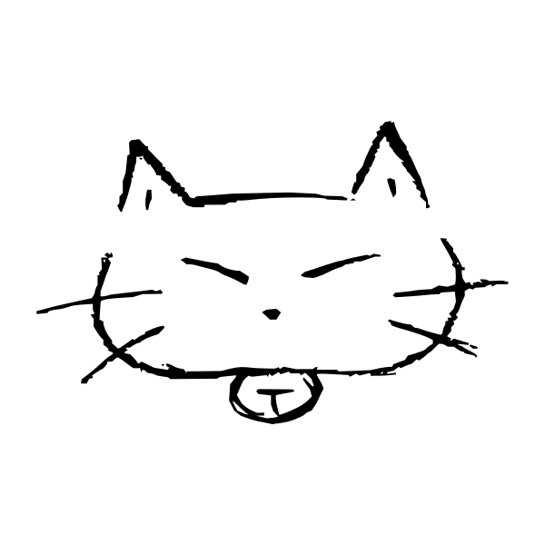

Akihiko Horiuchi
About me
Graduate School of Engineering, Kagawa University
Reliability-based Information Systems Engineering
Second year graduate studnet
Saisho Laboratory
SNS & Blog
Research
Cloud, Auto Scaling, Load Balancer, Load Distribution, Load Observation
Environment
Ubuntu Server
Zsh
Emacs
Ruby, Ruby on Rails, Hubot, Sensu, Ansible, Golang
Microsoft Expression Design 4
Projects
hico-horiuchi/chikurin
(竹林: Sensu status page by golang)
hico-horiuchi/kangen
(還元: URL shortening tool by golang)
hico-horiuchi/sensu-plugins-go
(Sensu plugins & libraries by golang)
sai-lab/mouryou
(魍魎: Auto scaling tool by golang for web servers on Cloud)
sai-lab/shoko
(書庫: Document (書) archive service for teams)
hico-horiuchi/ohgi
(扇: Sensu command-line tool by golang)
hico-horiuchi/streak_ranking
(Ranking of streak of your GitHub followees)
hico-horiuchi/hubo_labo
(Hubot community site)
emacs-jp/reading-init.el
(init.el読書会のページ)
hico-horiuchi/huboco
(あなたの研究生活をサポートするHubot)
hico-horiuchi/snmp_monitor
(SNMPをグラフ化するWebアプリケーション)
hico-horiuchi/comic_release.rb
(コミック新刊の発売日を調べるRubyスクリプト)
Club
Student Laboratory of Programming
RISE Photo Club
Design
第11回 香川大学工学部祭 ポスター
香川大学工学部 メディア・デザイン研究会 ポスター
© 2015 Akihiko Horiuchi, All Rights Reserved.